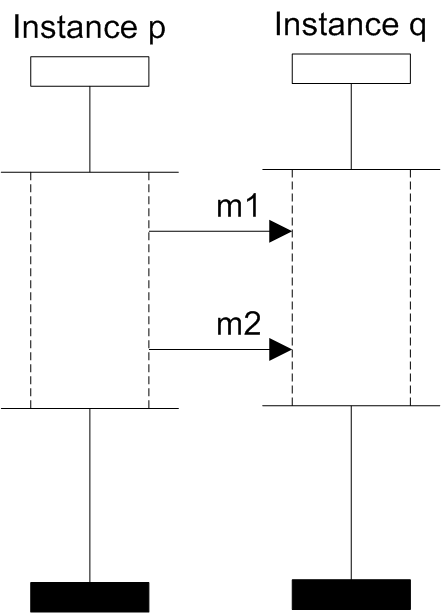

FIFO (First In, First Out) property
is a BMSC property. The property ensures that it is possible to implement the desired behavior without deadlocks, that would be caused by channel behavior.
There are several types of channels and several ways how they can be used in BMSC. Some of the most useful are the following:
- FIFO channel for every pair of instances
- FIFO channel for every pair of instances and labels
- One FIFO channel for every process
- One FIFO channel for all processes
Basic Message Sequence Chart
FIFO channel for every pair of instances
FIFO property is violated when there are two messages, such that they share a common source and destination instance and the latter message may arrive before the first one.
Imagine we have a system in an all-channel FIFO environment which behaves according to a BMSC specification. A process expects the messages to arrive in some order, according to specification, but the messages might have been sent in a different order. A deadlock is reached as there might be a different message in the head of the channel queue.
An example of a non-FIFO design can be seen on the next picture. Message m1 is sent before m2, but instance q receives message m2 before m1. Because we are having a FIFO channel between instances p and q, this is not possible and leads to a deadlock.
-
-

- Example of a non-FIFO design
-
Formal definition:
BMSC is FIFO if for all receive events c, d and their matching send events a, b (<a,c> forms the first message and <b,d> forms the second message) it holds that c < d => a < b, where < is the visual order and the two messages belong to the same channel.
On the next picture we can see tricky examples of FIFO BMSCs. They satisfy the FIFO property, because the receive events of both messages are in coregion. This means that the user has specified that the receive events can happen in an arbitrary order. So that if there is any order of these two events in the head of the channel queue, the system will certainly not reach deadlock.
-
- 
- Example of a FIFO design
-
- Example of a different FIFO design
An example of a non-FIFO design can be seen on the following picture. This is because the Instance q can execute only the receive event of message m1 and then the receive event of the message m2. However it is possible (due to coregion), that the message m2 is at head of the channel queue of Instance q and message m2 is behind it.
-
- Example of a non-FIFO design
FIFO channel for every pair of instances and labels
In this case we can have more than one FIFO channel between two processes. For every label there is one channel. Everything what has satisfied FIFO property in the previous case, will satisfy the property also in this case. The difference can be seen on the following FIFO example:
Messages m2 and m1 are not in the same channel, therefore they may arrive in any order.
High-level Message Sequence Chart
HMSC satisfies FIFO property for a certain channel type, if every BMSC represented by the HMSC satisfies the FIFO property for that channel type.